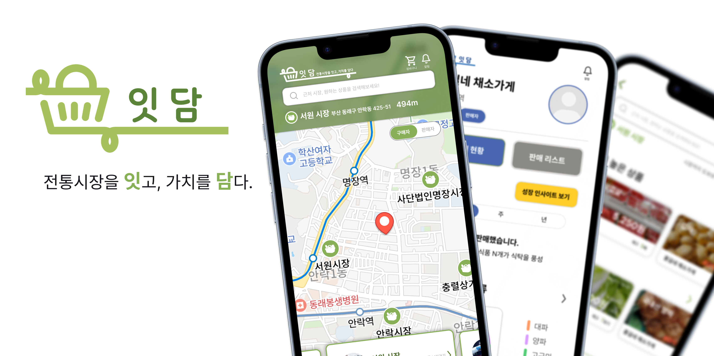
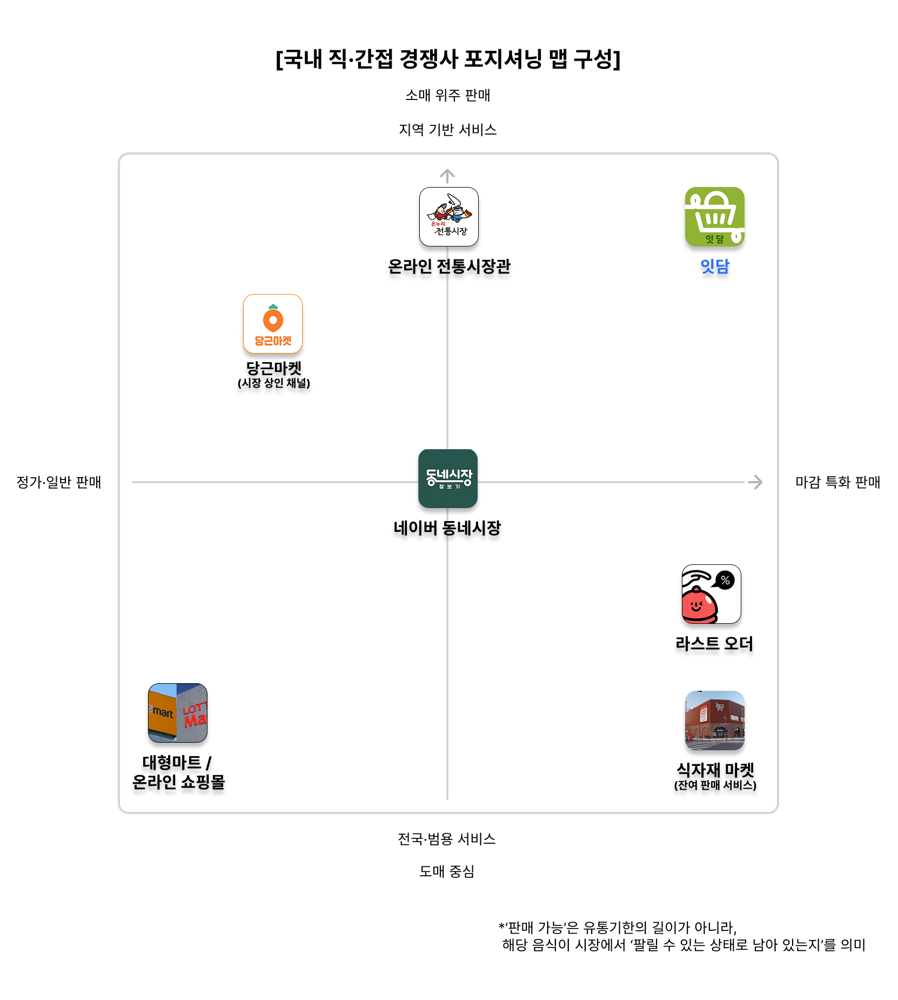
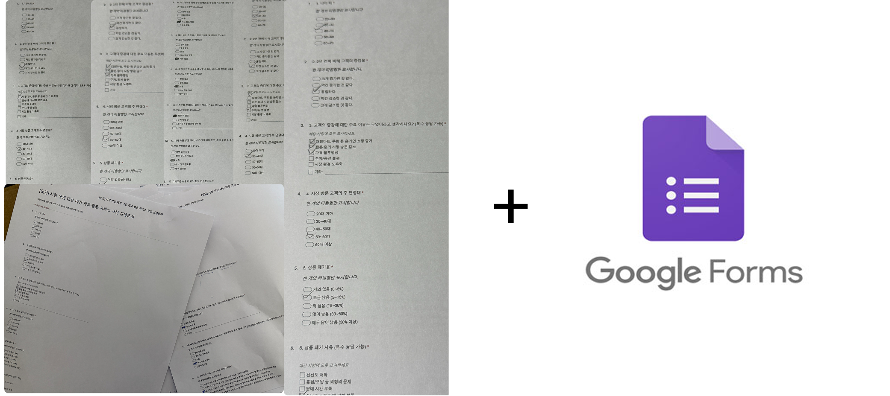
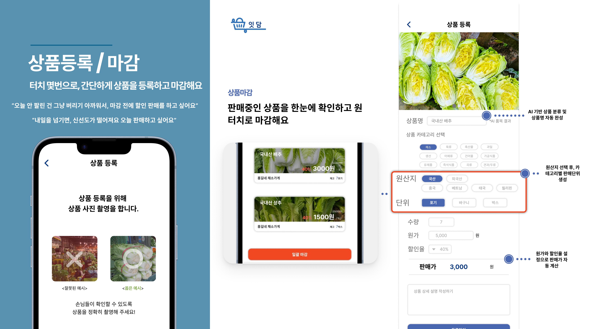
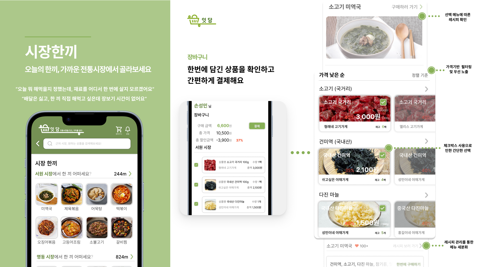

현장 방문
시장에 직접 방문해 점포를 둘러보는 과정에서 상인에게 설문 참여를 요청했습니다.
Product Management · O2O · Business Planning · 2025—2026
버려질 상품에서, 팔릴 수 있는 상품으로
전통시장에서 오늘 팔리지 못한 신선식품을, 폐기되기 전 근처 소비자와 연결하는 위치기반 O2O 플랫폼입니다. 상인이 사진 한 장으로 상품을 올리는 순간부터 근처 소비자가 찾아와 수령하기까지를 하나의 흐름으로 연결했습니다.
83명
시장 방문 상인 설문 34명 · 소비자 온라인 설문 49명
88건
기능 · 정책 · 보안 · 데이터 · 성능 5개 도메인
15명
원격 모더레이티드 · 1인 30분 · 사전 합격선 기준 판정

마감 20분 전의 상품을, 퇴근길 30분 안으로
01Problem
매출은 늘었는데, 고객은 줄고 있었습니다
전통시장이 어렵다는 이야기는 익숙합니다. 그래서 처음 세운 가설도 평범했습니다. "사람이 안 와서 어렵다."
그런데 통계를 열어보니 이상했습니다. 시장당 일평균 매출액은 2023년까지 꾸준히 올랐습니다. 그 상승을 이끈 건 식품 업종이었습니다. 2019년 대비 농수축산물이 63%, 음식점이 44% 늘었습니다. 반면 방문 고객 수는 팬데믹 이후 반등하지 못하고 계속 떨어졌습니다. 5년 사이 26% 감소했습니다.
같은 시장에서 매출은 오르고 사람은 줄고 있었습니다. 소수의 고객이 더 많이 쓰고 있다는 뜻이었고, 새로 들어오는 사람은 없다는 뜻이었습니다.
| 전국 전통시장 수 | 시장당 일평균 고객 | 영업 점포 | 빈 점포 | 식품 취급 업종 |
|---|---|---|---|---|
| 1,408 → 1,393개 | −26% (5년) | −8.09% (11년) | +16.57% (11년) | 49.7% |
전통시장 점포의 절반은 식품을 팝니다. 그리고 식품은 시간이 지날수록 가치가 떨어지는 상품입니다.
그러니까 전통시장의 손익은 "몇 명이 왔는가"보다 "오늘 안에 다 팔았는가"에 더 크게 묶여 있었습니다. 매출이 오르는 와중에도 점포가 사라지고 있던 이유가 여기 있었습니다.
앞의 질문은 우리가 풀 수 없는 문제였고, 뒤의 질문은 소프트웨어로 개입할 수 있는 문제였습니다.
세 갈래의 불편을 각각 네 번씩 파고들었습니다. 표면의 증상에서 멈추지 않고, 구조적인 원인이 나올 때까지 질문을 이어갔습니다.
| Pain Point 1 | Pain Point 2 | Pain Point 3 |
|---|---|---|
| 점점 줄어드는 전통시장 이용객 | 매출의 불균형 | 식품 점포의 재고 관리 한계 |
| 구매 경험의 불확실성 정보 디지털화 부족 |
신뢰 신호 누적에 따른 승자독식 비교 비용이 높은 시장 환경 |
시간 경과에 따른 가치 하락 재고 관리 인사이트 부족 |
| 이용객 감소 | 매출 불균형 | 재고 관리 한계 | |
|---|---|---|---|
| Why 1 | 젊은 세대는 가격이 투명하고 비교가 쉬운 디지털 플랫폼에 익숙해, 전통시장을 구매 경험이 불확실한 공간으로 인식한다. | 시장 내 구매가 일부 점포에 집중되고, 나머지 점포는 고객 접점이 부족해 매출 격차가 벌어진다. | 당일에 판매되어야 하는 식품이 팔리지 않고 남으면 판매 가능성이 급격히 낮아진다. |
| Why 2 | 온라인과 달리 가격·재고·품질을 사전에 확인할 방법이 없어, 방문 전 판단에 필요한 정보가 부족하다. | 오프라인에서는 "어디서 살지"를 정할 때 눈에 보이는 위치·간판·붐빔이 판단 근거가 되어, 사람이 많은 곳을 우선 선택한다. | 시간이 지날수록 신선도·상품성이 떨어지고, 구매 매력도가 함께 낮아진다. |
| Why 3 | 바가지 우려, 서비스 편차, 카드 결제 가능 여부 등 불확실 요소가 남아 "가봐야 안다"는 상황이 반복된다. | 전통시장에는 점포·상품 정보를 비교할 노력이 들기 때문에, 실제 가능성을 줄이려 '사람이 많다'는 신호에 의존해 결정한다. | 당일 수요를 예측하기 어려워 판매량 예측이 빗나가고, 그 결과 필요 이상의 재고가 자주 발생한다. |
| Why 4 | 시장 방문 전에 핵심 정보가 한눈에 확인 가능한 형태로 표준화되어 공개되지 않아, 소비자가 스스로 비교·검증해야 한다. | 한 번 형성된 신호는 그 자체가 다시 강한 신뢰 신호가 되어 신규 고객을 유입시키고, 격차가 시간이 지날수록 벌어진다. | 대형마트·온라인 쇼핑은 판매·재고 데이터를 기반으로 수요를 예측하지만, 전통시장은 품목·판매 기록이 체계화되지 않아 근거로 쓸 데이터가 부족하다. |
| 근본 원인 |
구매 경험의 불확실성 전통시장 정보의 디지털 활용 부족 |
신뢰 신호 누적에 따른 승자독식 비교 비용이 높은 시장 환경 |
시간 경과에 따른 가치 하락 재고 관리 인사이트 부족 정보 노출 채널 부족 |
세 갈래는 결국 한 곳에서 만났습니다. 팔 수 있는 상품이 있는데, 그 정보가 어디에도 없다는
02Market
아무도 규모를 모르는 문제였습니다
문제를 정했으니 크기를 알아야 했습니다. 얼마나 버려지고 있는지, 그중 얼마가 팔릴 수 있었던 것인지.
그런데 그 숫자가 없었습니다. 국가 음식물 폐기물 통계는 '버려질 수밖에 없던 폐기물'과 '팔릴 수 있었는데 못 판 상품'을 구분하지 않습니다. 둘이 한 덩어리로 잡히니, 우리가 풀려는 문제만 따로 떼어낼 방법이 없었습니다. 아무도 크기를 모르니 아무도 들어오지 않은 시장이기도 했습니다. 기회이면서 동시에 벽이었습니다.
정확한 값을 찾는 걸 포기하고, 판단이 가능한 자릿수를 얻는 것으로 목표를 바꿨습니다. 공개된 통계만으로 역산하는 수식을 세 단계로 세웠습니다.
① 음식물 폐기물이 발생하는 전국 사업장 수 (N전체)
도·소매 460,193 × 식품 비중 55%
+ 숙박·음식점 352,235 × 식품 비중 75%
= 517,282개
② 그중 전통시장에서 발생하는 양 (W시장)
전국 폐기물 336,520t
× (전통시장 점포 347,959 × 신선식품 비율 49% ÷ 517,282)
= 143,309 t / 년
③ 잇담이 만들어낼 수 있는 경제적 가치 (C가치)
143,309t × 목표 전환율 60% × 소비 가능 비율 20%
× 음식물 처리비 155,000원/t
= 최대 약 27억 원 / 년
고용노동부 전국 산업별 사업체수(2023), 기후에너지환경부 폐기물 발생 및 처리현황(2023), 소상공인시장진흥공단 전통시장 현황(2023), 한국음식물류폐기물자원화협회 처리비용 산정 참고자료, UNEP Food Waste Index Report(2021) 조합
정확한 값이 아니라 판단 가능한 자릿수를 얻는 것이 목적이었기 때문에, 각 단계의 비율은 공개 통계에서 가져오고 출처를 함께 남겼습니다. 수식이 공개되어 있으면 전제가 바뀌었을 때 어느 단계를 고쳐야 하는지도 분명해집니다.
수식 ③에 들어간 목표 전환율 60%는 임의로 넣은 값이 아닙니다. 이 숫자를 그대로 서비스의 성과 지표로 가져갔습니다.
시장의 크기를 계산한 수식과 서비스의 성공 기준이 같은 숫자 위에 서 있게 만들었습니다.
전체 시장이 아니라 처음 6개월 안에 만날 사람의 수가 필요했습니다. 조건을 하나씩 걸어 퍼널로 좁혔습니다.
전통시장에 접근이 가능하며 식재료를 구매하는 인구
가격에 민감하고 전통시장 이용 가능성을 가진 인구
절약·소용량 구매를 선호하고 문제 정의에 공감하는 고객군
전통시장 디지털 구매를 수용할 수 있는 층
MVP 실사용이 예상되는 초기 고객
막대 길이는 TAM 대비 비율입니다.
경쟁 서비스를 두 축 위에 올려봤습니다. 정가 판매와 마감 특가, 그리고 전국·도매와 지역·소매.
| 온라인 전통시장 · 네이버 동네시장 · 당근마켓 | 라스트오더 · 식자재마켓 | Too Good To Go · Flashfood · OLIO |
|---|---|---|
| 전통시장을 온라인에 올리지만 당일 재고 손실은 다루지 않음 | 마감 상품을 다루지만 음식점·B2B 중심 | 모델은 검증됐지만 대형마트·프랜차이즈에 적용 |

전통시장 × 신선식품 × 폐기 직전. 세 조건이 겹치는 자리는 비어 있었습니다. '어디서 팔 것인가'를 다루는 서비스는 많았지만, '사라지기 직전의 상품을 전통시장에서 어떻게 연결할 것인가'를 다루는 서비스는 없었습니다.
03Research
필요한 답이 어느 자료에도 없었습니다
시장 규모는 계산했지만, 정작 서비스를 설계하려니 막혔습니다. 상인이 하루에 얼마나 남기는지, 스마트폰을 어디까지 다루는지, 추가 판매 채널을 원하기는 하는지. 어느 자료에도 없었습니다. 기존 리서치는 대부분 정책·산업 관점이라 시설 현대화율이나 지원사업 참여율 같은 숫자만 있었습니다.
특히 걸린 건 평균 60.8세라는 상인 연령이었습니다. 이 숫자만 보면 "앱은 무리"라는 결론이 자연스러운데, 그 결론이 맞다면 서비스 자체가 성립하지 않습니다. 책상에서 판단할 문제가 아니었습니다.
확인하고 싶은 것을 여섯 개로 정리하고, 상인용·소비자용 질문지를 직접 만들었습니다.
| 상인에게 | 소비자에게 |
|---|---|
| 미판매·폐기가 실제로 생기는가 | 전통시장에 갈 때 뭐가 불편한가 |
| 추가 판매 채널이 필요한가 | 가격·재고를 미리 알면 갈 의향이 생기는가 |
| 스마트폰을 어디까지 쓰는가 | 마감 할인 상품에 거부감이 있는가 |
문제는 응답자를 어떻게 모으느냐였습니다. 장사 중인 상인에게 설문을 부탁하는 일은 온라인 모집으로 해결되지 않습니다. 그래서 네 가지 경로를 동시에 열었습니다.
시장에 직접 방문해 점포를 둘러보는 과정에서 상인에게 설문 참여를 요청했습니다.
시장 내 점포를 운영하는 지인에게 부탁해 상인회 안에서 참여자를 연결받았습니다.
교회를 함께 다니는 시장 상인에게 요청해 추가 참여를 확보했습니다.
Google Forms로 만든 질문지 링크를 공유해 소비자 응답을 모았습니다.
그 결과 상인 34명, 소비자 49명의 응답을 모았습니다. 장사 중인 분들이라 짧게 묻고, 대신 옆에서 관찰했습니다.

상인 응답은 현장 방문과 지인·커뮤니티 연결을 함께 사용했기 때문에 무작위 표본은 아닙니다. 통계적 대표성보다 현장의 실제 조건을 확인하는 데 목적이 있었습니다.
첫째, 소비자는 전통시장을 싫어하지 않았습니다. 불편하다고 꼽은 건 주차·동선과 가격 정보가 명확하지 않다는 것이었습니다. 공간이 싫은 게 아니라 가보기 전에 알 수 없는 것이 문제였습니다.
둘째, 상인은 스마트폰을 못 쓰지 않았습니다. 대다수가 일상적인 사용에는 무리가 없다고 답했습니다. 상인이 꼽은 고객 감소 원인 1위는 대형마트·온라인 쇼핑의 증가 (79.4%)였고, 폐기 직전 상품을 알릴 수 있는 서비스가 있다면 쓰겠다는 응답이 79%였습니다.
폐기 직전 상품을 알릴 수 있는 서비스가 있다면 쓰시겠습니까? 상인 34명
긍정 79%
매우 있음 47% · 어느 정도 32% · 보통 18% · 별로 없음 3%
가격·재고를 방문 전에 확인할 수 있다면 시장에 가서 구매하시겠습니까? 소비자 49명
긍정 59%
매우 있음 16% · 어느 정도 43% · 보통 31% · 별로 없음 8% · 전혀 없음 2%
문제는 사람도, 기술도 아니었습니다. 양쪽 다 준비되어 있는데 연결하는 구조가 없었을 뿐이었습니다.
이 두 문장이 이후 모든 기능 결정의 기준이 되었습니다. 다만 83명의 응답은 표 안에 있으면 아무것도 결정해주지 못합니다. 숫자를 사람으로 옮기는 작업이 다음 단계였습니다.
04Persona
두 사람의 시간 안에서 작동해야 했습니다
리서치 결과 중 앱으로 해결 가능한 불편만 골라 페르소나를 만들었습니다. 그리고 각각의 하루에서, 서비스가 끼어들 수 있는 구간이 몇 분인지부터 확인했습니다.
퇴근 18시, 아이 하원 후 쓸 수 있는 시간 30분. 배달은 싫고 마트는 동선 밖입니다.
오후 5시 30분부터 남은 재고를 처리할 20분. 급히 팔려 해도 알릴 방법이 없습니다.
예산은 집행하는데 효과를 증명할 데이터가 없습니다. 미판매·폐기 규모가 통계로 안 잡힙니다.
페르소나를 설명글로 두지 않고, 단계 → 니즈 → 행동 → 실현 기능 네 열로 분해했습니다. 시나리오가 그대로 요구사항으로 넘어가게 만들기 위해서였습니다.
김지현의 30분
| 시각 | 행동 | 실현 기능 |
|---|---|---|
| 18:00 | 현재 위치 기준으로 앱을 연다 | 위치 기반 시장 추천 |
| 18:03 | 근처 4개 점포의 마감 할인을 한 번에 본다 | 마감 할인 점포 모아보기 |
| 18:07 | 고등어 2팩이 7,000원 → 4,500원인 걸 확인한다 | 상품 이미지·중량·재고, 정가·할인가 비교 |
| 18:09 | 매장에서 지갑 꺼낼 필요 없이 미리 결제한다 | 간편결제, 픽업 시간 안내 |
| 18:40 | 아이와 가는 길에 들러 받는다 | 픽업 완료 처리 |
이창수의 20분
| 시각 | 행동 | 실현 기능 |
|---|---|---|
| 17:40 | 고등어 2박스가 남은 걸 확인한다 | 마감 시간 기반 등록 유도 |
| 17:43 | 사진을 찍고 19시까지 4,500원을 입력한다 | AI 자동 분류, 원가·할인율 넣으면 판매가 자동 계산 |
| 17:45 | 버튼 한 번으로 등록이 끝난다 | 즉시 판매 노출 |
| 17:55 | "1개 판매됨" 알림을 받는다 | 실시간 판매 알림, 재고 자동 반영 |
| 18:40 | 찾아온 손님에게 건넨다 | 픽업 확인·판매 완료 |
등록에 3분, 구매에 5분. 이 시간을 넘기면 서비스는 쓰이지 않습니다. 이후 사용성 테스트의 합격선도 여기서 나왔습니다.
김지현과 이창수만으로도 서비스는 성립합니다. 그런데 박정민을 넣었습니다.
전통시장 활성화 예산은 매년 집행되지만, 효과를 증명할 데이터가 없어 사업이 시설·행사 중심으로 반복된다는 걸 리서치에서 확인했기 때문입니다. 잇담이 쌓는 거래·미판매 데이터는 지자체와 상인회가 근거로 쓸 수 있는 자료가 됩니다.
이 페르소나가 나중에 수익 모델의 세 번째 단계(08장)와 사업계획서의 B2G 시나리오(09장)로 이어졌습니다.
05Prioritization
후보는 10개였고, 팀은 3명이었습니다
기능 아이디어는 계속 나왔습니다. 배송, 픽업존, 보관법 안내, 개인화 추천. 문제는 짧은 시간과 개발 인력이었습니다. 무엇을 만들지가 아니라, 무엇을 만들지 않을지를 먼저 정해야 했습니다.
E-커머스라면 당연히 있어야 하는 기능(회원가입·결제·장바구니)은 아예 후보에서 뺐습니다. 그건 잇담이 잘해서 얻는 점수가 아니기 때문입니다. 잇담만의 기능 10개만 남겨 RICE로 점수를 매겼습니다.
| 1위 · 시장한끼 | 2위 · AI 상품 등록 | 3위 · 전통시장 배송 |
|---|---|---|
| 한 끼 재료를 한 번에 | 사진 한 장으로 등록 | 집까지 배달 |
| 7.2 | 4.05 | 3.5 |
배송은 점수가 상위권이었고, 사용자들이 가장 원하는 기능이기도 했습니다. 그런데 뺐습니다.
Effort가 5였습니다. 6주 안에 되는 일이 아니었고, 무엇보다 배송비와 신선도 관리 부담이 전통시장이라는 환경과 정면 충돌했습니다. 이미 시장에는 배송으로 신선식품을 파는 서비스가 많았고, 그들이 전통시장에 들어오지 못한 이유가 정확히 그것이었습니다. 같은 이유로 픽업존도 뺐습니다. 둘 다 외부 협약이 전제인 기능이었습니다.
그리고 하나 더 뺐습니다. 처음에는 판매자용 성장 인사이트를 초기 수익원으로 잡았는데, 나중에 사용성 테스트에서 지불 의향이 3,000원 수준으로 확인되면서 기본형으로 축소하고 유료화 시점을 뒤로 미뤘습니다.
팀 안에서 의견이 갈린 것도 이 지점이었습니다. 배송은 설문에서 가장 많이 요청된 기능이었고, 이걸 빼면 발표에서 내세울 차별점이 약해진다는 우려가 있었습니다. 저도 같은 걱정을 했습니다. 대신 점수를 다시 뜯어봤습니다. 배송의 RICE 점수는 Reach와 Impact가 끌어올린 값이었고, Effort 5는 6주라는 조건에서 사실상 "못 한다"는 뜻이었습니다. 더 걸린 건 다른 지점이었습니다. 배송을 넣는 순간 잇담은 이미 배송으로 신선식품을 파는 서비스들과 같은 링에 서게 됩니다. 우리가 이길 수 있는 자리는 거기가 아니라 '지금 가까운 시장에 남아 있는 상품'이었습니다. 그래서 빼는 대신 옮기기로 합의했습니다. 배송을 로드맵 Update 3에 명시하고, 의사결정 로그에 왜 지금은 아닌지를 남겼습니다. 발표에서도 빠진 기능으로 넘기지 않고, 뺀 이유를 하나의 장면으로 설명했습니다.
우선순위는 점수 순서가 아니라, 지금 이 팀이 감당할 수 있는 범위에 대한 판단이었습니다.
Reach · Impact · Confidence · Effort 기준을 포함한 전체 산정표. 여기에 상위 항목을 표로 옮기세요.
빠진 기능은 반드시 다시 논의됩니다. 그때 "왜 뺐더라"를 되짚지 않으려고, 결정할 때마다 근거와 포기한 것을 함께 적었습니다.
| 결정 | 근거 | 포기한 것 |
|---|---|---|
| 배송을 MVP에서 제외 | Effort 5, 전통시장 환경과 충돌 | 소비자의 최대 불편 (직접 이동) |
| 판매자 수수료를 0%로 시작 | 최대 리스크는 수익성이 아니라 상인 참여 | 초기 수익 전부 |
| 외부 AI 데이터셋 확보 포기 | 확보·재가공 비용 과도 | 초기 인식 정확도 |
| 온라인에서 다 끝내지 않음 | 방문 유도가 서비스의 정체성 | "여전히 가야 하는 거죠?"라는 불만 |
나머지 결정 3건을 같은 형식으로 여기에 넣으세요.
"시장한끼를 만들자"는 개발 착수 지시가 아닙니다. 화면 하나하나, 예외 상황 하나하나가 정해져야 합니다.
시나리오를 쪼개 요구사항 88건으로 정리했습니다. 기능·정책·보안·데이터·성능으로 분류하고, 각 요건에 중요도와 구현 방식을 붙였습니다. 그리고 마지막 칸에 MVP 또는 Update 1, 그리고 그 이유를 적었습니다.
REQ_G-06 마감 상품 노출 우선순위
→ 상품 정렬 로직에 마감 가중치 적용
→ MVP (폐기 감소 목적)
목적을 함께 적어두면, 일정이 밀렸을 때 무엇을 먼저 자를지 판단할 근거가 남습니다.
88건을 언제 만들지까지 정했습니다 MVP 78건 · Update 1 10건
MVP 88.6% · Update 1 11.4%. 뒤로 미룬 10건은 운영 리스크 관리, 분쟁 처리, 전환율 개선처럼 서비스가 돌아가기 시작한 뒤에야 판단할 수 있는 항목이었습니다.
강조된 세 그룹이 잇담만의 기능입니다. 마감(G), 레시피(N), 심화 인사이트(R). 나머지 열네 그룹은 커머스라면 갖춰야 하는 기본기였고, 개발 순서를 정할 때도 이 구분이 기준이 됐습니다.
| 요건 ID | 요구사항명 | 적용 방안 | 우선순위 |
|---|---|---|---|
| REQ_A-02 | 사용자 유형 선택 및 분기 | 사용자 Role 필드 분리, 화면 접근 제어 | MVP (IA 분기 기준 핵심) |
| REQ_G-06 | 마감 상품 노출 우선순위 | 상품 정렬 로직에 마감 가중치 적용 | MVP (폐기 감소 목적) |
| REQ_H-01 | 상품 등록 | 상품 등록 폼 및 필수값 검증 | MVP (판매자 핵심 기능) |
| REQ_N-01 | 레시피 기반 상품 추천 | 레시피–식재료 매핑 테이블 + 판매 중 상품 필터링 | MVP (시장한끼 핵심 로직) |
| REQ_M-04 | 서비스 품질 지표 관리 | 핵심 KPI 정의 및 집계 | MVP (개선 판단 근거) |
| REQ_R-06 | 심화 인사이트 구독 관리 | 구독 상태 플래그 및 접근 제어 | MVP (핵심 수익 모델) |
| REQ_G-04 | 마감 임박 상품 강조 | 시간 임계값 기준 강조 UI 적용 | Update 1 (전환율 개선 요소) |
| REQ_B-05 | 제재·복구 프로세스 관리 | 제재 상태 코드 관리, 기간 기반 자동 해제 | Update 1 (운영 리스크 관리) |
06Design
두 사용자의 부담을 각각 최소로 줄였습니다
같은 앱 안에서 서로 다른 두 사람이 만납니다. 한 명은 20분 안에 재고를 처리해야 하는 53세, 다른 한 명은 30분 안에 장을 봐야 하는 36세입니다.
상품명과 카테고리는 AI가 채웁니다. 판매자가 직접 넣는 건 원산지·단위·수량·원가·할인율뿐이고, 판매가는 자동으로 계산됩니다. 판매가 = 원가 × (1 - 할인율)이고, 직접 수정은 막았습니다. 가격을 얼마로 할지 고민하는 시간 자체가 부담이라는 걸 리서치에서 확인했기 때문입니다.
마감은 개별·일괄·자동 중에 고를 수 있게 했습니다. 나중에 테스트에서 “선택권을 준다는 점이 가장 좋다”는 반응이 여기서 나왔습니다.

소고기미역국을 고르면 소고기·건미역·다진마늘이 각 점포의 마감 상품으로 묶여 나옵니다. 총 가격과 할인 금액이 한 번에 보이고, 마음에 안 드는 재료는 다른 가게 것으로 바꿀 수 있습니다.
여러 점포를 도는 시간이 소비자의 최대 불편 (59.2%)이었으니, 비교를 앱에서 끝내고 방문은 한 번으로 줄이는 구조였습니다.

상인 대부분은 소비자이기도 합니다. 그런데 앱을 두 개 설치하게 하는 건 60대 사용자에게 가장 큰 이탈 지점이라고 봤습니다.
그래서 별도 앱이 아니라 메인 화면 상단의 토글 하나로 역할을 전환하는 구조로 IA를 짰습니다. 구매자와 판매자의 Depth는 완전히 분리하되, 진입점만 공유하는 방식입니다.
화면 설계서를 쓸 때 정상 흐름보다 예외 흐름을 먼저 정의했습니다. 개발 중에 되묻게 되는 지점이 거기고, 그때 생기는 커뮤니케이션 비용이 일정을 가장 많이 잡아먹는다고 판단했습니다.
| 위치 권한을 거부하면 | 재고가 0이면 | 이미지가 안 뜨면 | 설명이 길면 |
|---|---|---|---|
| 안내 문구 + 권한 요청 CTA 상세에서는 "위치 정보 없음" |
수량 선택 비활성화 "품절" 표시 |
기본 플레이스홀더 | 말줄임 + "더보기" (최대 300자) |
AI 품목 인식에는 학습 데이터가 필요한데, 신선식품 이미지·라벨은 외부에서 구하기 어렵고 재가공 비용도 컸습니다.
그래서 방향을 바꿨습니다. 판매자가 상품을 등록하는 행위 자체가 학습 데이터가 되도록 테이블을 설계했습니다. 등록된 이미지와 상품명·카테고리가 라벨과 함께 쌓이고, 그게 다음 인식 정확도를 올립니다. 같은 원리로 사용자 행동도 전량 로그로 적재하게 했습니다. 이 데이터가 나중에 국내에 존재하지 않는 '전통시장 폐기 위험 상품 데이터셋'이 됩니다.
데이터를 모으는 기능이 아니라, 서비스를 쓰면 데이터가 남는 구조를 만든 것이 이 설계의 핵심이었습니다.
07Testing
테스트를 열기 전에 합격선을 먼저 정했습니다
사용성 테스트에서 가장 위험한 건 끝나고 나서 결과를 좋게 해석하는 것입니다. 그래서 프로토타입을 열기 전에, 무엇을 성공으로 볼지부터 숫자로 못 박았습니다.
S1. "당신은 60대 판매자입니다. 처음으로 물품을 등록해주세요"
→ 판매자 토글을 1분 안에 찾으면
Y
→ 등록 완료까지 3분 이하면
Y
기능마다 이런 카드를 만들었습니다. 구매 완료는 1분, 첫 진입은 10초. 성장 인사이트는 기준이 조금 달랐습니다. "1원이라도 낼 의향이 있으면 Y." 유료 기능이 될 예정이었으니, 좋다는 말은 판정 기준이 될 수 없었습니다.
진행 중에는 힌트도, 유도 질문도 주지 않았습니다. 상황만 제시하고 완료 여부와 소요 시간, 도움을 요청한 횟수, 되돌아간 횟수만 기록했습니다.
C1 · C2 · BC-1 · BC-2 · SC-1 · SC-2 판정 규칙과 B1~S4 시나리오 표를 여기에 넣으세요.
결과는 나쁘지 않았습니다. 구매 과정 82%, 랜딩 80%, 판매 과정 78%가 긍정이었습니다. 랜딩만 보고 서비스를 이해한 사람이 15명 중 12명이었습니다.
| UI/UX · 랜딩 | 물품 구매 | 물품 판매 | 서비스 전체 |
|---|---|---|---|
| 80% | 82% | 78% | 60% |
전체 평가에서만 '보통'이 40%였습니다. 기능은 다 좋다고 하면서, 서비스 자체에는 유보적이었습니다. 인터뷰 문장에 답이 있었습니다.
"내게 필수 서비스는 아니다"
"시장한끼 말고는 '꼭 써야 할 이유'가 약하다"
폐기 감소라는 명분에 대해서도 이런 말이 나왔습니다.
"폐기물이 줄어드는 게 아니라, 판매자에서 구매자로 옮겨가는 것일
수도 있다"
"온라인 판매 때문에 오히려 준비 물량이 늘어날 수도 있다"
서비스의 존재 이유를 정면으로 흔드는 지적이었습니다. 그리고 맞는 말이었습니다. 거래액이 늘었다고 폐기가 줄었다고 말할 수는 없으니까요.
이 지적 때문에 성과 지표를 바꿨습니다. 총 거래액이 아니라 "등록된 폐기 위험 상품 중 실제로 팔린 비율"을 목표로 잡았습니다. 그래야 증명되는 숫자였습니다.
반박만 나온 건 아니었습니다. 어디가 통했는지 알아야 다음에 무엇을 지킬지 정할 수 있습니다.
| 랜딩 | 구매 | 판매 |
|---|---|---|
| "바로 이해된다" "이미지가 이해에 도움" |
"레시피 기반 묶음구매"가 가장 많이 나온 차별점 | "개별·일괄·자동 마감에서 선택권을 준다는 점" |
08Roadmap
반영하는 대신, 배치했습니다
부정 피드백은 9건이었습니다. 전부 반영하겠다고 하면 6주도, 6개월도 부족합니다. 바로 되는 것 / 데이터가 쌓여야 되는 것 / 남의 도장이 필요한 것으로 갈랐습니다.
| Update 1 · 바로 | Update 2 · 데이터가 쌓이면 | Update 3 · 협약이 필요하면 |
|---|---|---|
| 스킵 버튼 노출 시점 조정 | 시장 안 점포 상세 위치 안내 | 배송 (지역 배달 협약) |
| 상품등록 프리셋 | AI 등록 자동화 고도화 | 픽업존 (상인회 협약) |
| 시장한끼에 즉석식품 추가 | 개인화 추천 · 인사이트 확대 | "꼭 써야 할 이유" 재설계 |
"상품의 신선도 고지는 어디에 있나요?"
사진만 보고 신선도를 판단하게 하는 흐름은 판단의 책임을 구매자에게 떠넘기는 것이라는 지적이었습니다.
그런데 표기 기준을 만들면 상인의 등록 부담이 늘어납니다. 같은 테스트에서 "장사 중에 방해되면 바로 안 쓴다"는 말이 나왔던 터라, 입력 항목을 하나 늘리는 결정을 가볍게 할 수 없었습니다. 임의로 정하지 않고 미해결 과제로 명시해 남겼습니다.
모든 피드백에 답을 내는 것보다, 답을 못 낸 지점을 정확히 아는 게 더 중요하다고 판단했습니다.
개선안을 시점으로만 나누면 로드맵이 아니라 위시리스트가 됩니다. FE · BE · QA · Data 네 개 레인에 태스크를 나눠 마일스톤 4개와 출시 2회로 배치했습니다.
| M1 | M2 | M3 | M4 | |
|---|---|---|---|---|
| 목표 | AI 인식 + 판매자 로직 | 구매자 로직 | 판매자 심화 인사이트 | 구매자 추천 알고리즘 |
| FE | 사진 업로드 UI | 시장한끼 구매 UX | 인사이트 대시보드 | 추천 상품 UI |
| BE | 이미지 업로드 API | 레시피 기반 묶음 정렬 | 상권 단위 집계 API | 로그 기반 추천 API |
| QA | AI 실패 시 시나리오 | 주문량 초과 오류 | 인사이트 정합성 검증 | 추천 오류 예외 처리 |
| Data | 인식 성공 지표 분석 | MVP 핵심 지표 산출 기준 정의 | 기준 데이터셋 구축 | 추천 성과 지표 정의 |
| 출시 | — | MVP 출시 | — | Update 1 |
모든 마일스톤에 Data 레인을 넣었습니다. 만들고 나서 "잘 됐나?"를 묻는 게 아니라, 출시 전에 무엇을 성공이라 부를지부터 정하는 순서로 짰습니다.
목표는 매출이 아니라 네 주체가 각각 얻어야 할 것 으로 나눴습니다.
폐기 위험 상품 등록 상인 60%+
추가 매출 비중 10%+
20~30대 비중 40%+
재구매율 30%+
판매 전환율 60%+
월 판매 성공 300건+
폐기 위험 데이터셋 1종
취약 상품군 TOP 3
O3의 60%는 02장에서 시장 규모를 계산할 때 넣었던 그 숫자입니다.
가장 큰 리스크는 수익성이 아니라 상인이 안 쓰는 것이었습니다. 그래서 상인에게 돈을 받는 건 맨 뒤로 미루고, 초기 수익은 지역 광고와 데이터에서 만들도록 순서를 설계했습니다.
| 서비스 시작 | MAU 10,000+ | MAU 200,000+ |
|---|---|---|
| 수익원 없음 (정부지원사업 자금) | 지역 기반 광고, 성장 인사이트 유료화 | + 판매자 수수료 5%, 빅데이터 API · 상인회 계약 |
| 수수료 0% · 구매자 10% 쿠폰 | 수수료 0% 유지 | 전 점포 확장 |
09Business
학습 과제로 끝내지 않았습니다
6주가 끝나고 발표로 마무리할 수도 있었지만, 실제로 통할지 확인해보고 싶었습니다. 같은 아이템을 사업계획서로 다시 써서 2026 청년창업사관학교에 지원했습니다.
| 과제명 | 신청 규모 | 목표 시장 |
|---|---|---|
| 전통시장 미판매 신선식품 재소비를 위한 위치기반 O2O 플랫폼 개발 | 정부지원금 70백만 원 + 대응자금 30백만 원 |
전국 1,393개소 중 3~5개 시장 실증 |
가장 낯설었던 건 기능 하나하나에 금액과 산출 근거를 붙이는 일이었습니다. "상인용 등록 기능을 개선한다"가 아니라 "모바일 앱 기능 고도화 15,000,000원 — 등록·마감 기능 개선, 추천 알고리즘 고도화"로 써야 했습니다.
그 과정에서 04장의 박정민 페르소나가 실제로 쓰였습니다. 지자체·상인회 MOU를 전제로 한 B2G 확장 시나리오의 근거가 되었고, 로드맵의 마지막 단계와 그대로 연결했습니다.
서비스를 설계하는 것과 그 서비스에 값을 매기는 것은 다른 훈련이었습니다.
10Reflection
팀장을 맡으며, 팀원의 성향과 역량을 파악해 작업을 나누는 일이 생각보다 어렵다는 걸 체감했습니다. 단순히 역할을 분배하는 걸 넘어 각자의 강점이 결과물에 자연스럽게 반영되도록 조율하는 과정이 필요했습니다.
그동안 "데이터를 기반으로 판단한다"고 말해왔지만, 이번에 데이터 자체보다 그것을 어떻게 해석하느냐에 따라 결론이 달라진다는 걸 알게 됐습니다. 같은 숫자를 보고도 주목하는 지점이 사람마다 달랐고, 그 차이에서 기획자의 판단 기준이 작동했습니다.
통계에 없는 지표는 수식으로 추산하고, 부족한 표본은 시장에 나가 만들었습니다. "데이터가 없어서 판단할 수 없다"는 말을 하지 않게 됐습니다.
후보 10개 중 2개만 남겼고, 가장 원하는 기능을 뺐습니다. 우선순위는 점수가 아니라 감당할 수 있는 범위였습니다.
기능 만족도 80%에 멈추지 않고 전체 평가 60%와의 차이를 로드맵의 출발점으로 삼았습니다.
| 기획 | 요구사항 정의서 88건 · IA · 화면 설계서 · 페르소나 · 사용자 시나리오 · User Story |
|---|---|
| 리서치 | 유저 설문 리포트 · 사용성 테스트 설계서 · 테스트 결과 리포트 |
| 전략 | 5 Whys · 시장 분석 · 경쟁 분석 · BMC · SWOT · RICE · Kano · OKR · 프로덕트 로드맵 |
| 데이터 | 데이터 활용 전략 · 활용 기능 시나리오 · 개선 및 유지보수 계획 · 접근 관리 정책 |
| 설계 | 와이어프레임 · Figma 프로토타입 · 서비스 구조도 · ERD |